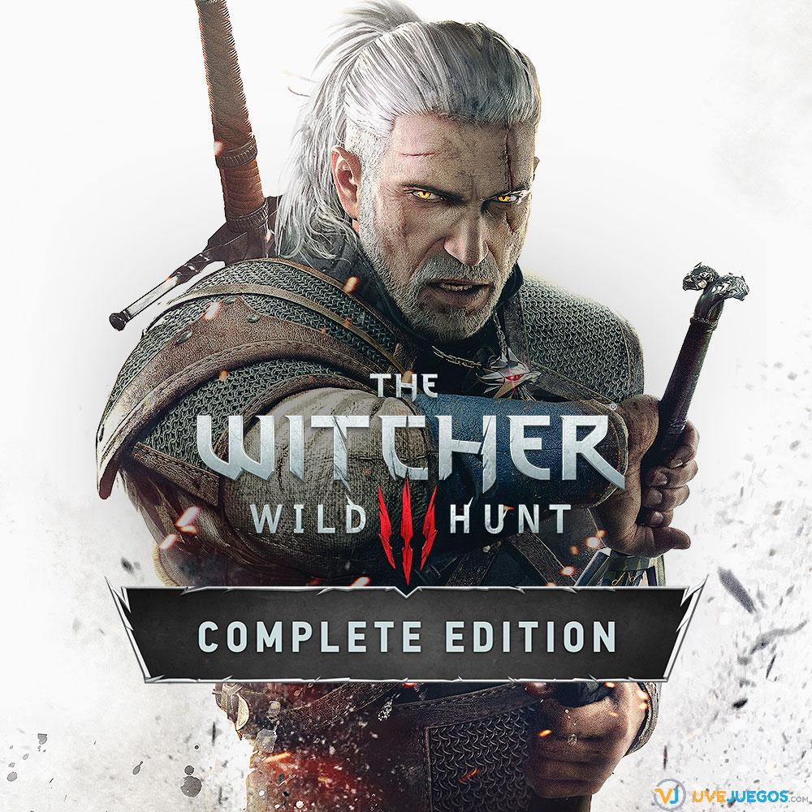
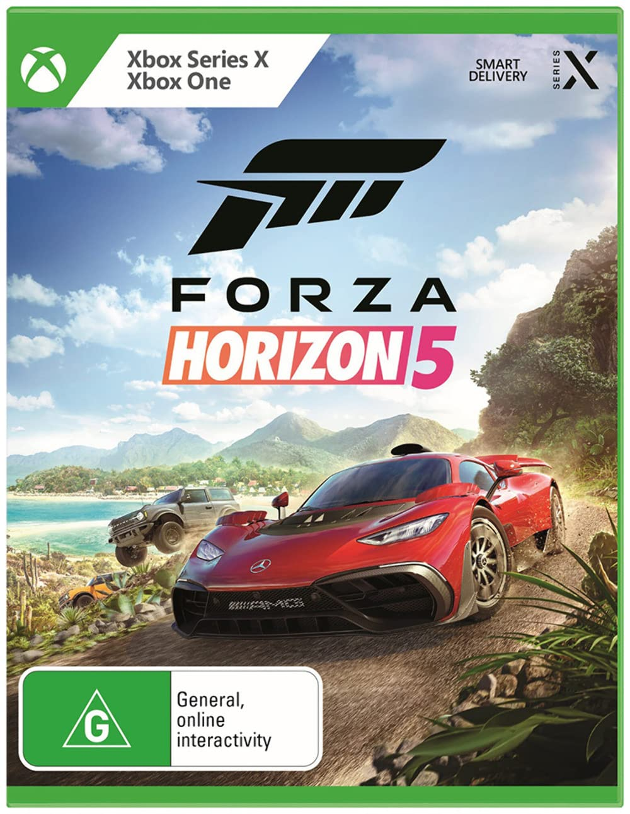
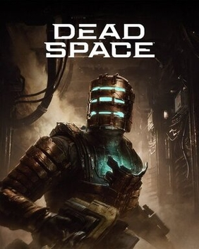

1: The Witcher 3

The Witcher 3: Wild Hunt es un videojuego de rol desarrollado y publicado por la compañía polaca CD Projekt RED. Esta compañía es la desarrolladora mientras que
la distribución corre a cargo de la Warner Bros. Interactive, en el caso de Norteamérica y Bandai Namco para Europa.
2: Elden Ring

Elden Ring es el nuevo videojuego de rol, aventura y acción de FromSoftware y Bandai Namco. Ideado por Hidetaka Miyazaki y George R.R. Martin, el escritor de
Canción de hielo y fuego, nos llevará a un mundo convulso, complejo y sangriento.
3: Forza Horizon 5

Forza Horizon 5 es la nueva entrega de la saga de conducción en mundo abierto de Microsoft. se ambienta
en México y cuenta con un sistema de condiciones meteorológicas que incluirá desde leves tormentas de polvo, hasta tormentas tropicales más fuertes y otro tipo de
eventos climáticos grandes y masivos.
4: Street Fighter 6

Street Fighter 6 es la nueva entrega de la veterana saga de lucha 2D de Capcom, que vuelve rehecho con la tecnología de RE ENGINE de Capcom para dar una mayor espectacularidad.
Sus modos de juegos se reparten en World Tour, Fighting Ground y Battle Hub.
5: Dead Space Remake

Vuelve Dead Space, el clásico de terror, supervivencia y ciencia ficción, reconstruido completamente desde cero para ofrecer una experiencia más profunda e inmersiva.
Este remake presenta una fidelidad visual asombrosa, un sonido ambiente lleno de suspense y mejoras en la jugabilidad.